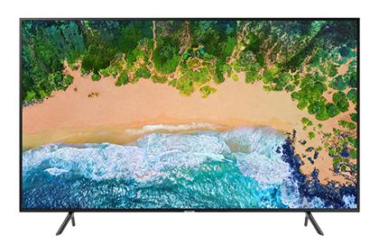

Samsung 40" UHD Smart TV
$ 830
- PurColor: Enjoy millions of shades of color, fine tuned to create an incredibly vibrant picture. Motion Rate 120: Smooth action on fast-moving content
- HDR: View stunning high dynamic range content with a TV designed to support HDR10+
- Slim Design: An elegant slim design for a modern look you’ll admire
- Smart TV: Access your streaming services all in one place using the Samsung Remote Control
- Note-compression of video content may cause picture distortions, especially in fast moving pictures from sports programs and action movies. If the signal reception is weak or poor, screen distortion may be visible but it is not a malfunction. Mobile phones used close to the tv within 3.2 feet may cause noise on analog and digital channels